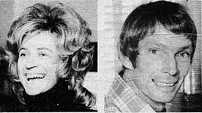

|
Samantha
Dawe
LAST THURSDAY night
saw the opening of Melbourne's Film Festival at the National
theatre in St Kilda. In recognition of International Womens Year
the first film screened was the French woman director Yannick
Bellon's John's wife.
While
the film was entertaining and well cast I went along to enjoy the best part of the show
...the beautiful people in the audience.
Walking
into the foyer of the National theatre I was struck speechless by
the sheer beauty before me. Rising above the ascending staircase
were almost 100 multicolored balloons. Such beauty ...such good
taste. Then I spotted Ray Fisher, the chairman of the organising
committee, wearing the biggest bow tie I've ever seen. Ray
isnt the largest man in Melbourne, and darlings I thought he was
in v. grave danger of taking off with such a big propeller.
Natalie
Miller, owner of Sharmill Films, and publicity director of the
festival was looking v. Trak afro with her gollywog hairdo. Robyn
Wallace (Robb, the fashion editor of the education department's Comet
magazine) was long and lissome in same afro shakeout.
In the auditorium I saw so many beautiful people. There was Geoff
Sinclair, publicity director of J. C.
Williamsons wearing a v. smart brown |
 |

They were there: Natalie Miller
(pre afro) and Peter Couchman
leather shoulder bag; Phillip Nelson of
ABC radio and friend; Peter Couchman of TDT sporting a spiffing royal
blue dinner jacket; Colin Bennett, film critic of the Age, was wearing
a rather inappropriate gabardine raincoat (I think he thought he was off to
the R rated Case of the smiling stiffs again), and Age feature writer
Douglas (I'm writing Graham Kennedy's biography) Aiton.
My special mention
must go to the Ms who made a v. regal entrance just before the lights went
down: Kate Baillieu, just back from chasing camels around central Australia,
looks to be getting taller. She'll soon be able to look over her seven feet
back fence at the neighbours sunbaking in Trak. Kate was wearing the most
amazing belt around her waist. I don't think it was the chastity type. |